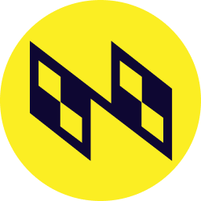
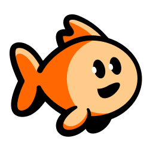
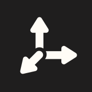
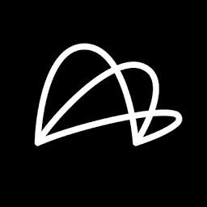

The right source for every task
Each request goes to its best fit: a web search API, a live crawl, or a browser agent.
WebRouter is a single, open standard for agents to search the web, retrieve data, crawl sites, run browser actions, and execute deep research.
Getting the best web data for your agent requires an in-depth understanding of different configs, strengths, and weaknesses across many providers.
15 benchmarks 8 different leaders. No provider wins them all.
Each request goes to its best fit: a web search API, a live crawl, or a browser agent.
Skip testing providers and stitching results together. WebRouter queries the right search engines and crawlers, then returns structured data.
Fast, low-cost search handles simple lookups, and premium search takes on hard research. You never overpay or come up short.
Use the default web search routing or configure your own.
Web search, browsing & extraction

Nimble Browserbase
Browserbase
TinyFish
Tavily Perplexity
Perplexity Firecrawl
Firecrawl
Linkup